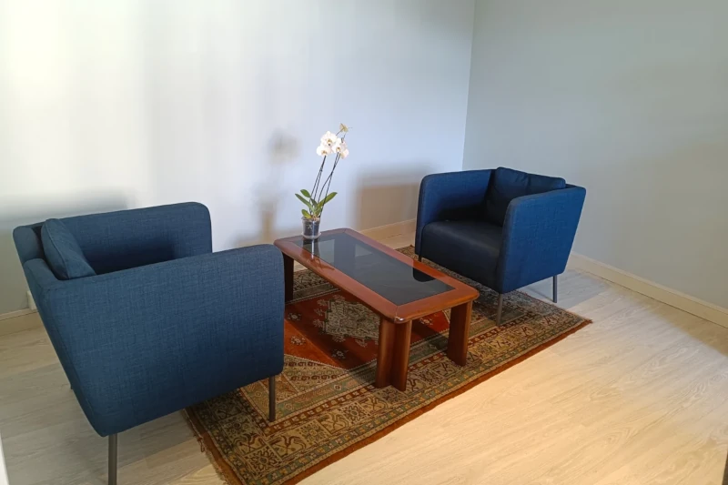

Attualmente gestisco il mio studio privato di Psicologia e Psicoterapia a Credaro (BG), offrendo supporto psicologico personalizzato per adulti, adolescenti e bambini nella zona del Lago d’Iseo, in particolare a Sarnico (BG) e nei comuni limitrofi delle province di Bergamo e Brescia.

Collaboro anche con la piattaforma online
UnoBravo,
che mi consente di effettuare colloqui psicologici da remoto. Inoltre, sono presente su
MioDottore
per offrire un’ulteriore possibilità di contatto.
Esperienze Professionali
Un supporto personalizzato per ogni esigenza
In passato ho lavorato presso la
Fondazione Papa Giovanni XXIII - Autismi e Terapie a Valbrembo (BG),
occupandomi di bambini, adolescenti e adulti. Ho inoltre maturato esperienza nella Comunità Psichiatrica per Adulti CPA Villa Fiorita a Val Brembilla (BG), nella Rete Famiglie Affidatarie di Bergamo e presso l’UONPIA – Unità Operativa di Neuropsichiatria dell’Infanzia e dell’Adolescenza a Bergamo (BG).
Psicologa a Credaro, Villongo e zona Lago d’Iseo
Se stai cercando una psicologa a Credaro o nei comuni limitrofi come Villongo, Sarnico, Grumello del Monte e Castelli Calepio, il mio studio rappresenta uno spazio accogliente dove poter intraprendere un percorso psicologico personalizzato. L’esperienza maturata nel territorio bergamasco e bresciano mi consente di offrire supporto concreto e mirato alle esigenze delle persone che vivono in queste aree. È possibile svolgere anche colloqui psicologici online in totale riservatezza.